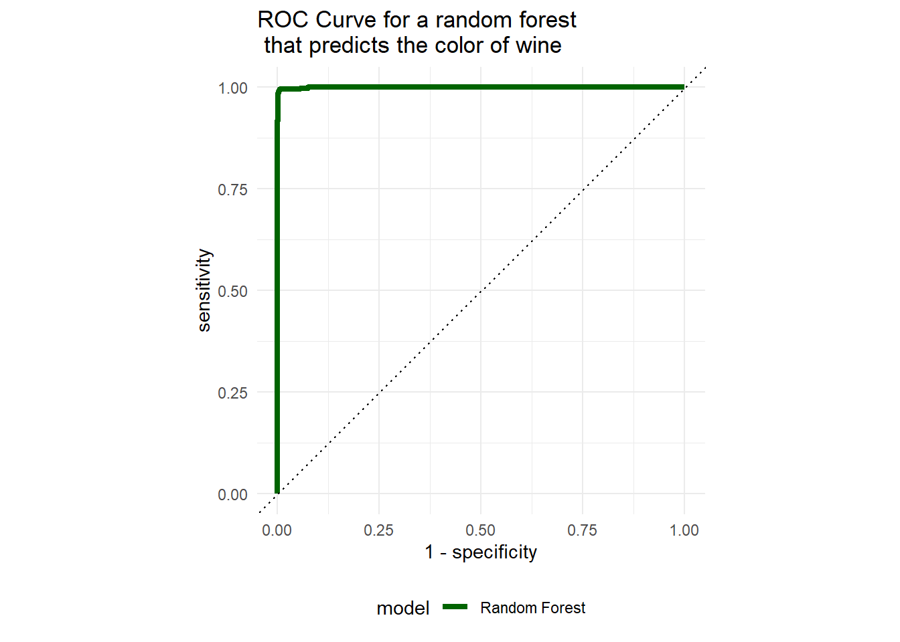
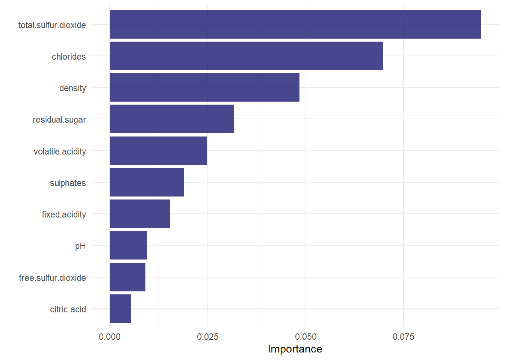
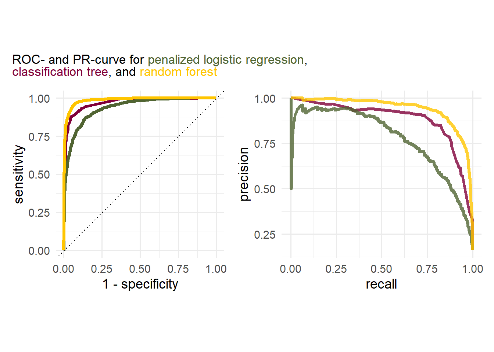

library(tidyverse)
library(tidymodels)
#variable importance plots
library("vip")
#Stitching together plots and adding markdown text
library("patchwork")
library("ggtext")5 Random Forests
In this exercise session we will briefly talk about some theoretical considerations when applying bootstrap sampling, bagging and training a random forest before performing a more in-depth case study of binary classification. The case-study assumes that you are familiar with penalized logistic regressions (similar to lasso regression, see Session 03 ) and classification trees (similar to regression trees introduced in Session 4). We will however, revisit different evaluation metrics for a binary classifier before training any of the models which should help you to develop a feeling for model performance.
Note, that some of the models we train might take a few (up to many) minutes depending on your hardware. One way to circumvent long training processes is to use a simple training/validation/test split instead of CV.
5.1 Introduction
In this session, we primarily deal with binary classification. The target variable \(Y\) therefore takes on only two values. Usually, these values are encoded as \(0\) and \(1\), so that \(Y\) can be represented as a vector \(Y\in\{0,1\}^K\). We are now interested in estimating the probability \[\begin{equation} \mathbb{P}(Y=1|X=x) \end{equation}\] for a data point \(x\in\mathbb{R}^{J}\). If the estimated probability \(\hat{p}\) is greater than a certain, predefined threshold \(q\in(0,1)\), then we assign the sample to class \(1\). Intuitively, the value \(q=0.5\) makes sense here, since with a probability \(p>0.5\) we are more certain that the data point belongs to class \(1\) than to class \(0\).
5.2 Evaluation of a Binary Classification Model
Since an evaluation using metrics like \(\text{RMSE}\) and \(R^2\) makes little sense in binary classification, we want to look at various alternative metrics in this section.
5.2.1 Confusion Matrix
The so-called confusion matrix serves as the basis for the metrics we want to consider in the following. This cross-tabulation indicates how many data points were classified correctly or incorrectly. Here, a distinction is made in particular between the classes Negative and Positive which are encoded with the numeric values \(0\) and \(1\). Mostly, in the context of the confusion matrix, \(1\) stands for Positive and \(0\) for Negative.
We can best illustrate the fields of the confusion matrix using an example.
Example 5.1 A research team at the university hospital has developed a test for detecting a rare heart disease. If doctors correctly detect this heart disease, it can be cured by a surgical intervention. The probability of a successful intervention is greater than the probability that a sick person survives the course of the disease. A positive test result is encoded as \(1\) or Predicted Positive and a negative result as \(0\) or Predicted Negative. Now there are the following possibilities:
- The test is positive and the examined person has the disease. This is called a True Positive.
- The test is positive and the examined person does not have the disease. This is called a False Positive.
- The test is negative and the examined person does not have the disease. This is called a True Negative.
- The test is negative and the examined person has the disease. This is called a False Negative.
Besides correct classification (TP and TN), we should particularly deal with the two incorrect classification scenarios. In Example 5.1, a person falsely classified as negative (FN) is therefore a patient who has the heart disease but is not diagnosed. This type of error is particularly serious in the example, since the person has a higher survival probability through the surgical intervention. If a person is falsely classified as positive (FP), this means that the test turns out positive even though the person is not suffering from the heart disease. Under ordinary circumstances, such a misclassification would not be quite as serious, since the person is, after all, not suffering from the rare disease. However, if a surgical intervention is performed based on the test result anyway, then the patient is exposed to an unnecessary risk.
How well such a test actually works should therefore not only be determined by the absolute or relative number of correctly classified data points, but also by how high the corresponding error rates are.
This statement can be expressed more precisely with the following key figures:
- Accuracy: \[\begin{equation*} \text{Accuracy} = \frac{TP+TN}{TP+TN+FP+FN} \end{equation*}\] Accuracy measures the relative proportion of correctly classified data points to the total number of data points. It describes the probability of a correct test result.
- Sensitivity: \[\begin{equation*} \text{Sensitivity} = \frac{TP}{TP+FN} \end{equation*}\] Sensitivity measures the relative proportion of data points correctly classified as positive to the total number of positive data points. It describes the conditional probability that a positive result is predicted, assuming that the result is actually positive.
- Specificity: \[\begin{equation*} \text{Specificity} = \frac{TN}{TN+FP} \end{equation*}\] Specificity is the counterpart to sensitivity. It measures the relative proportion of data points correctly classified as negative to the total number of negative data points. Specificity can also be interpreted as the conditional probability that a negative result is predicted, assuming that the result is actually negative.
- Precision: \[\begin{equation*} \text{Precision} = \frac{TP}{TP+FP} \end{equation*}\] Precision measures the relative proportion of data points correctly classified as positive to the total number of data points classified as positive. Particularly with unbalanced datasets1, precision is an important metric, as accuracy can lead to fallacies with unbalanced datasets.
5.2.1.1 ROC Curve and Precision-Recall Curve
When passing a sample into the classification model, the return-value is usually a probability \(p\in[0,1]\) that denotes the probability of the sample belonging to the Positives (in this hypothetical setting we assume that there are two classes “Positives” and “Negatives”). Intuitively it makes sense to say, that a given sample \(x\) belongs to the Positives if \(p\geq q = 0.5\). However, this threshold \(q = 0.5\) can be adjusted. Depending on this threshold \(q\) , the values in our confusion matrix change.
Example:
Set \(q = 0\), then \(p\) is always larger or equal to \(q\), which means that we assign every value to the positives. Then, our True Positive Rate (\(\mathrm{TPR} = \frac{\mathrm{TP}}{\mathrm{P}}\)) will be equal to \(1\) since all samples are assigned to the Positives. However, the True Negative Rate (\(\mathrm{TNR} = \frac{\mathrm{TN}}{\mathrm{N}}\)) will be equal to 0, since not one sample has been assigned to the Negatives, meaning that \(\mathrm{TN} = 0\) .
A way to visualize the change in our confusion matrix depending on the threshold \(q\) is given by the so-called ROC (Receiver-Operator Curve) curve and Precision-Recall Curve.
ROC Curve:
The ROC curve shows the \(\mathrm{TPR}\) (also known as recall or sensitivity) plotted against the \(\mathrm{TNR}\) (also known as 1-specificity). By plotting these two values against each other, we can identify a good model by checking whether the curve generated by all the thresholds is approaching the left top corner of a plot, indicating that both \(\mathrm{TPR}\) and \(\mathrm{TNR}\) are equal to 1, i.e. the model perfectly classifies all True Positives and all True Negatives. An exemplary plot can be found below.
PR Curve:
The Precision-Recall Curve on the other hand shows the Precision (\(\mathrm{Precision} = \frac{\mathrm{TP}}{\mathrm{TP}+\mathrm{FP}}\) ) plotted against the Recall (\(\mathrm{Recall} = \frac{\mathrm{TP}}{\mathrm{TP}+\mathrm{FN}}\)). If the line generated by a model is close to the top right corner, the model is relevant, has a high precision, and sensitivity.
An exemplary plot can be found below.
What does a high precision and recall actually mean (I find the definition above kind of hard to grasp)? Let us consider a simple example:
Example:
Imagine you are developing a classification model for detecting a rare disease (Positves corresponds to detecting the decease). There are 10000 people in the observed data and only 10 of them are infected with said disease. One way to set up a model (regardless of the features) can be to simply label everyone as not having the disease which would effectively result in an accuracy of 99.9%, Hurray . However, this model is obviously not the best since we failed to identify any of the sick people correctly. So, after tweaking the model we now have a model that might be less accurate but identifies sick patients better. What does better in this context mean? By looking at the definition of Precision and Recall above, you may notice that they only differ by the second summand in the denominator of the fraction, namely False Positives and False Negatives. Before we continue, think for yourself, which of those are worse in the scenario of detecting a disease? The right answer would be False Negatives, since we fail to identify a sick patient! That is why a sensitive model is crucial here as well
In summary: especially for imbalanced data sets, we do not only want to achieve a high accuracy since that is fairly easy to achieve. We Also want a high precision or recall, focusing on one or the other depending on the model objective.
5.3 Classification with Trees
In the previous section, we have already extensively discussed regression trees. The transition from regression to classification trees is ultimately not complex either! Instead of a real-valued target variable, we now consider estimated classes or class probabilities in the leaf nodes. The algorithm for estimating a classification tree remains almost unchanged compared to regression trees. Only the improvement value, which is calculated using the \(\text{MSE}\) for regression trees, must be replaced by a suitable metric in the classification context. This metric is given by the Gini impurity. For a node \(K_n\), this is defined as \[\begin{equation*} 1-(p_1^2+p_0^2) \end{equation*}\]
where \(p_1\) is the relative frequency of class \(1\) in the node and \(p_0\) is the relative frequency of class \(0\) in the node. It is then tested for which \(p_i,\: i=0,1\) the removal leads to a larger impurity index. I.e., if \(p_1\geq p_0\), the node will return class \(1\) as the classification value. The decision regarding the splitting variables works the same way: Test for which variable the greatest reduction in Gini impurity results, and use this for a further split.
The importance of the variables can then also be measured with respect to this impurity value, so that we can effectively use the same permutation feature importance method.
5.4 Random forests
Throughout this exercise we will use the following libraries:
For this sessions example, we will also use the white wine data set, but extend it by adding the red wine data set. The red wine data set can be downloaded directly from the UC Irvine Machine Learning Repository or by clicking the button below.
A detailed description of each parameter see Cortez et al.
Note, that importing the red wine data set with the read.csv function requires the argument sep = ";" which indicates that
the columns in the csv are separated by a semicolon.
After importing the data, we add a new column names wine_color that indicates the color of the wine. The wine color will be the target variable, meaning that we try to determine the color of a wine given all the other attributes.
To combine both data sets, we can use the rbind() function which binds together the rows of a data set. Before binding together the rows of the data set, we need to make sure that the names of the columns coincide. Otherwise, the columns can’t be matched.
data_wine_red<-read.csv("data/winequality-red.csv", sep = ";")
data_wine_white<- read.csv("data/winequality-white.csv")
data_wine_red<- data_wine_red %>% mutate(wine_color = "red")
data_wine_white<- data_wine_white %>% mutate(wine_color = "white")
data_wine <- rbind(data_wine_red,data_wine_white)The newly created data set contains approximately \(5000\) wine samples with around \(25\%\) being red wine and the remaining \(75\%\) being white wine.
data_wine %>% group_by(wine_color) %>%
summarise(n = n()) %>%
mutate(ratio = n/sum(n))# A tibble: 2 × 3
wine_color n ratio
<chr> <int> <dbl>
1 red 1599 0.246
2 white 4898 0.754Since our data set is imbalanced we should apply stratification in our data split. Stratification ensures that the same ration of red and white wine samples is in the training and testing data. After splitting our data, we can create a 5-fold CV object on the training data.
set.seed(123)
split_wine <- initial_split(data_wine, strata = wine_color)
data_wine_train <- training(split_wine)
data_wine_test <- testing(split_wine)
folds_wine <- vfold_cv(data_wine_train,5)Then, we can set up a receipe containing a simple formula and step to convert the target feature wine_color to type factor.
rec_wine <- recipe(
wine_color ~.,
data = data_wine_train
) %>%
step_string2factor(wine_color)A random forest model can be specified using the rand_forest() function. Additional arguments include, but are not limited to:
mode: indicates whether a classifier or a regression model is specified. (required)trees: indicates the number of trees fitted in the forest. (default =500)min_n: indicates the minimum number of data points in a node that is required for the node to be split further. (default =20)mtry: indicates the number of variables to possibly split at in each node. (default =sqrt(ncol(data)-1)))
Note, that the mtry parameter depends on the number of independent variables. If mtry = ncol(data)-1, meaning that we select every single independent variable for a potential split, we are creating a bag, rather than a random forest.
By setting every hyper parameter to tune(), we specify that the respective hyper parameters are to be tuned.
rf_mod_tune_spec <- rand_forest(
mode = "classification",
trees = tune(),
min_n = tune(),
mtry = tune()
) %>%
set_engine("ranger", importance = "permutation")As with any other model, we can create a workflow, add the recipe and model specification, and create a metrics set. The metric set below contains the following metrics:
roc_auc: measures the area under the receiver operator characteristic (values \(\in [0,1]\), with \(1\) being the best possible value).pr_auc: measures the area under the precision-recall curve (values \(\in [0,1]\), with \(1\) being the best possible value).precision: measures the positive predictive value (values \(\in [0,1]\), with \(1\) being the best possible value).recall: measures the true positive rate (values \(\in [0,1]\), with \(1\) being the best possible value).
wf_wine <- workflow() %>%
add_recipe(rec_wine) %>%
add_model(rf_mod_tune_spec)
multi_metrics <- metric_set(roc_auc,pr_auc,precision,recall)The random forest model can be tuned on the 5-fold CV object in the same fashion as every other model. By specifying grid=10, we circumvent specifying the range for the mtry() parameter.
Warning
Tuning a random forest can take a while. Instead of using 5-fold CV, a simple training/validation/test split can decrease training time.
rf_tune_res <- wf_wine %>%
tune_grid(
resamples = folds_wine,
metrics = multi_metrics,
grid = 10
)After tuning the model, we can select the best set of hyper parameters with respect to different metrics. If we aim for a model that emphasizes correctly classifying the minority class, the metric pr_auc metric can be more useful (why?). We, therefore, select the best parameters according to the metric pr_auc and train a final model using these parameters.
best_parm_rf_wine <- rf_tune_res %>%
select_best(metric = "pr_auc")
last_rf_fit <- wf_wine %>%
finalize_workflow(best_parm_rf_wine) %>%
last_fit(split_wine,
metrics= multi_metrics)To evaluate our model, we can either collect the specified metrics using the collect_metrics() function, or generate PR- and ROC-curves.
The latter can be achieved with the following Code snippet. We first collect the predictions of the test data using the collect_predictions() function. Then, we generate a ROC- and PR-Curve using the functions roc_curve() and pr_curve(). The roc_curve() function returns a data frame containing three columns:
.threshold: containing the threshold probability for which a sample is assigned to the positive class (in that casered).specificity: containing the specificity of the model for the given thresholds.sensitivity: containing the sensitivity of the model for the given thresholds.
The pr_curve() function returns a similar data frame containing the recall and precision instead of specificity and sensitivity.
rf_auc<- last_rf_fit %>%
collect_predictions() %>%
roc_curve(wine_color,.pred_red) %>%
mutate(model = "Random Forest")
rf_pr<- last_rf_fit %>%
collect_predictions() %>%
pr_curve(wine_color,.pred_red) %>%
mutate(model = "Random Forest")We can generate the curve plots using the autoplot() function or ggplot. An example for both can be found below.
rf_auc %>% autoplot()
rf_auc %>%
ggplot(aes(x = 1 - specificity, y = sensitivity, col = model)) +
geom_path(lwd = 1.5) +
geom_abline(lty = 3) +
coord_equal() +
scale_color_manual(values = "darkgreen")+
labs(
title = "ROC Curve for a random forest \n that predicts the color of wine"
)+
theme_minimal(base_size = 11)+
theme(legend.position = "bottom")
To generate a feature importance plot with respect to the measure "permutation" feature importance, we first have to extract the fit engine from final model fit and then apply the vip() function of the vip library. The vip function creates a (ggplot) plot, showing the importance scores for the predictors in a model. The geom argument specifies what kind of plot is generated. Setting geom = "col" therefore creates a column plot. Other options include "boxplot", "point", and "violin".
library(vip)
last_rf_fit %>%
extract_fit_engine()%>%
vip(geom = "col",
aesthetics = list(fill = "midnightblue",
alpha = 0.8)
)+
theme_minimal(base_size = 11)
Considering the figure above, the variable total.sulfur.dioxide has the highest score which indicates that this variable helps determining the color of the wines most.
5.5 Exercises
5.5.1 Theoretical Exercises
In this exercise we will discuss some aspects of bootstrap sampling, bagging and random forest.
Exercise 5.1 Assume, we have a data set with \(n\) sample and a bootstrap sample of size \(n\). Furthermore, assume that the probability of an observation not being in the bootstrap sample is \(\left(1-\frac{1}{n}\right)^n\). Show that the probability for any sample \(j\) to be in the data set is approximately \(0.6321206\).
Exercise 5.2 In terms of bagging, explain the following sentence from the lecture:
Having similar trees leads to correlated estimates.
Exercise 5.3 Random forests can solve the problem mentioned in Exercise 5.2 of having trees that are too similar. Describe how this is achieved!
5.5.2 Programming Exercises
In this exercise we want to utilize our newly gained knowledge about Bagging and compare a random forest model to a single classification tree and penalized logistic regression.
The dataset we will consider in this exercise will be the Credit Card Customers data set that can either be downloaded using the provided link or the button below.
Recall that the data set consists of 10,127 entries that represent individual customers of a bank including but not limited to their age, salary, credit card limit, and credit card category.
The main idea for such classification tasks is the following:
Start out by building a simple base model, which allows for an easy interpretation of parameters. A penalized logistic regression will be this base model in our case.
Move to a slightly more complex model where the interpretation of model parameters is less straight forward, but the model performance increases. The model we will consider for this scenario is a decision tree.
As a last step, a highly complex model is trained where the focus is no longer on explainability rather than getting the best possible out of sample performance. An example of such a model is a random forest, which will also be our model of choice for this step.
Consider the following glimpse into the dataset:
Rows: 10,127
Columns: 21
$ CLIENTNUM <int> 768805383, 818770008, 713982108, 769911858, 7…
$ Attrition_Flag <chr> "Existing Customer", "Existing Customer", "Ex…
$ Customer_Age <int> 45, 49, 51, 40, 40, 44, 51, 32, 37, 48, 42, 6…
$ Gender <chr> "M", "F", "M", "F", "M", "M", "M", "M", "M", …
$ Dependent_count <int> 3, 5, 3, 4, 3, 2, 4, 0, 3, 2, 5, 1, 1, 3, 2, …
$ Education_Level <chr> "High School", "Graduate", "Graduate", "High …
$ Marital_Status <chr> "Married", "Single", "Married", "Unknown", "M…
$ Income_Category <chr> "$60K - $80K", "Less than $40K", "$80K - $120…
$ Card_Category <chr> "Blue", "Blue", "Blue", "Blue", "Blue", "Blue…
$ Months_on_book <int> 39, 44, 36, 34, 21, 36, 46, 27, 36, 36, 31, 5…
$ Total_Relationship_Count <int> 5, 6, 4, 3, 5, 3, 6, 2, 5, 6, 5, 6, 3, 5, 5, …
$ Months_Inactive_12_mon <int> 1, 1, 1, 4, 1, 1, 1, 2, 2, 3, 3, 2, 6, 1, 2, …
$ Contacts_Count_12_mon <int> 3, 2, 0, 1, 0, 2, 3, 2, 0, 3, 2, 3, 0, 3, 2, …
$ Credit_Limit <dbl> 12691.0, 8256.0, 3418.0, 3313.0, 4716.0, 4010…
$ Total_Revolving_Bal <int> 777, 864, 0, 2517, 0, 1247, 2264, 1396, 2517,…
$ Avg_Open_To_Buy <dbl> 11914.0, 7392.0, 3418.0, 796.0, 4716.0, 2763.…
$ Total_Amt_Chng_Q4_Q1 <dbl> 1.335, 1.541, 2.594, 1.405, 2.175, 1.376, 1.9…
$ Total_Trans_Amt <int> 1144, 1291, 1887, 1171, 816, 1088, 1330, 1538…
$ Total_Trans_Ct <int> 42, 33, 20, 20, 28, 24, 31, 36, 24, 32, 42, 2…
$ Total_Ct_Chng_Q4_Q1 <dbl> 1.625, 3.714, 2.333, 2.333, 2.500, 0.846, 0.7…
$ Avg_Utilization_Ratio <dbl> 0.061, 0.105, 0.000, 0.760, 0.000, 0.311, 0.0…Since some of the features are kind of ambiguous, let us briefly talk about what they mean.
| Feature | Description |
|---|---|
| CLIENTNUM | Client number. Unique identifier for the customer holding the account |
| Attrition_Flag | Internal event (customer activity) variable - if the account is closed then 1 else 0 |
| Months_on_book | Period of relationship with bank |
| Months_Inactive_12_mon | No. of months inactive in the last 12 months |
| Credit_Limit | Credit Limit on the Credit Card |
| Total_Revolving_Bal | Portion of credit card spending that goes unpaid at the end of a billing cycle |
| Avg_Open_To_Buy | Open to Buy Credit Line (Average of last 12 months) |
| Total_Amt_Chng_Q4_Q1 | Change in Transaction Amount (Q4 over Q1) |
| Total_Trans_Amt | Total Transaction Amount (Last 12 months) |
| Total_Trans_Ct | Total Transaction Count (Last 12 months) |
| Total_Ct_Chng_Q4_Q1 | Change in Transaction Count (Q4 over Q1) |
| Avg_Utilization_Ratio | Average Card Utilization Ratio (Divide the total balance by the total credit limit) |
Exercise 5.4 In the first exercise session, we already performed some exploratory data analysis, focusing on the demographics of the customers. Since we are mainly interested in predicting the attrition flag, find out the no-information rate (NIR) defined by
\[\begin{equation*} \max\left(\frac{\mathrm{P}}{\mathrm{N+P}},\frac{\mathrm{N}}{\mathrm{N+P}}\right) \end{equation*}\]
Exercise 5.5 Before splitting the data, some preprocessing steps should be applied to the whole dataset:
Use the following code snippet to convert all the
"Unknown"and"unknown"values intoNAvalues:across( where(~is.character(.)|is.factor(.)), ~if_else(.%in% c("Unknown","unknown"),NA,.) )Convert the features
Income_CategoryandEducation_Levelto ordered factors by using the levels provided below:levels_income <- c("Less than $40K","$40K - $60K", "$60K - $80K","$80K - $120K","$120K +") levels_education <- c("Uneducated", "High School","College", "Graduate", "Post-Graduate", "Doctorate")The target variable
Attrition_Flagcurrently has the values"Existing Customer"and"Attrited Customer". Change the variable into an unordered factor variable which has the value0, if a customer is of the class"Existing Customer"and1if the customer is of the class"Attrited Customer".
Exercise 5.6 Create a training and test split based on the previously modified dataset using set.seed(121) and a 5-fold CV object based on the training data. Use stratification for the target variable Attrition_Flag to ensure that the ratio of positive and negative sample remains the same in the training and testing data.
Exercise 5.7 Create a recipe by following the steps described below.
As a formula, fit the variable
Attrition_Flagon every other feature and set thedataparameter todata_train.Update the role of the variable
CLIENTNUMby setting it to"ID".Create ordnial scores for all ordered predictors.
Use the
step_unknown()-function on all factor predictors to handle unknown values.Create dummy variable for the features
Maritial_Status, GenderandCard_Category.Use mean imputation for all the numeric predictors.
Create a zero-variance and correlation filter for the data.
Exercise 5.8 Create a workflow object and add the newly created recipe rec_ci. Afterwards, create a metric_set that contains the metrics roc_auc,pr_auc,accuracy,precision, and recall.
Exercise 5.9 (Tuning a lasso model)
Utilize the
logistic_regfunction to create a lasso model.Create a regular grid for the logistic model penalty with \(30\) levels.
Tune the linear model using the 5-fold CV object created in Exercise 5.6, the grid specified in 2., and the metric set specified in Exercise 5.8.
Exercise 5.10
- Given the results of the previous exercise, select the best model according to the “one-standard” rule based on the
"pr_auc"metric. - Train a final model on the whole training data.
- Create two data frames containing the points of the models’ PR- and ROC-curve and visualize them.
Exercise 5.11 (Bonus Exercise) The following exercise is not mandatory but still helps for gaining a deeper understanding of the penalization behavior. Since we have used a lasso logistic regression, some of the parameters might have been driven to 0. Find if there were any!
Exercise 5.12 Repeat Exercise 5.9 - Exercise 5.10 by tuning a classification tree. Tune the parameters min_n, tree_depth, and cost_complexity using 5-fold CV and a regular grid with four levels. Instead of using the one standard error rule, use the select_best function instead.
Exercise 5.13 Use the vip::vip function to find the most important features of the final classification tree.
Exercise 5.14 Repeat Exercise 5.12 and Exercise 5.13 for a random forest model with \(1000\) trees. Tune the parameters mtry and min_n with a grid of size \(10\) using 5-fold CV.
Exercise 5.15 Given the following plots, answer the following questions:
- What can be said about the discriminatory power of the classes?
- Which curve should be considered for assessing the accurracy of the models?
- Which model performs the best?
Exercise 5.16 (Bonus exercise) Use the previously saved data frames containing the ROC- and PR-curve data for each model to recreate the plot in exercise Exercise 5.15
5.6 Solutions
Solution 5.1 (Exercise 5.1). For \(n\) sufficiently big, the estimate \(\left(1-\frac{1}{n}\right)^n \approx \exp(-1)\) holds. Since the probability of any sample not being in the data set is therefore approximately \(\exp(-1)\), we can simply calculate the complementary probability. The complementary probability is given by \(1-\exp(-1)\approx 0.63212\).
Solution 5.2 (Exercise 5.2). Bagging trees leads to fitting many trees with similar structure as the same features tend to be selected in the same step in different trees. Given that the estimates are depending on the splits of a tree, the estimates can be highly correlated if the tree structures are similar.
Solution 5.3 (Exercise 5.3). When bagging trees, the number of features for building a tree stays the same. A random forest on the other hand only selects a subset of all the features. This ensures that there is enough variability in the different trees and thus directly tackles the problem of the trees being too similar.
Solution 5.4 (Exercise 5.4).
NIR<- credit_info %>%
group_by(Attrition_Flag)%>%
summarise(n=n()) %>%
mutate(NIR = n/sum(n)) %>%
pluck(3) %>%
max()
glue::glue(
"The NIR of the underlying dataset is {round(NIR,3)},
meaning that a classification model should have
an accuracy of at least {round(NIR,3)}."
)The NIR of the underlying dataset is 0.839,
meaning that a classification model should have
an accuracy of at least 0.839.Solution 5.5 (Exercise 5.5).
credit_info <- credit_info %>%
mutate(
across(
where(~is.character(.)|is.factor(.)),
~if_else(.%in% c("Unknown","unknown"),NA,.)
),
Income_Category = factor(
Income_Category,
levels = levels_income,
ordered = TRUE
),
Education_Level = factor(
Education_Level,
levels = levels_education,
ordered = TRUE
),
Attrition_Flag = factor(
if_else(
Attrition_Flag=="Existing Customer",
0, 1)
),
Attrition_Flag = fct_rev(Attrition_Flag)
)Solution 5.6 (Exercise 5.6). Create a training and test split using set.seed(121) and a 5-fold CV object based on the training data.
set.seed(121)
split <- initial_split(credit_info, strata = Attrition_Flag)
data_train_ci <- training(split)
data_test_ci <- testing(split)
folds_ci <- vfold_cv(data_train_ci, v = 5)Solution 5.7 (Exercise 5.7).
rec_ci <- recipe(
formula = Attrition_Flag ~.,
data = data_train_ci
) %>%
update_role(CLIENTNUM, new_role = "Unique Identifier")%>%
step_ordinalscore(all_ordered_predictors()) %>%
step_unknown(all_factor_predictors()) %>%
step_dummy(Marital_Status,Gender,Card_Category)%>%
step_impute_mean(all_numeric_predictors()) %>%
step_zv(all_predictors()) %>%
step_corr(all_predictors())Solution 5.8 (Exercise 5.8).
ci_wf <- workflow() %>%
add_recipe(rec_ci)
multi_metrics <- metric_set(roc_auc,pr_auc,accuracy,recall)Solution 5.9 (Exercise 5.9).
log_mod_tune_spec <-logistic_reg(penalty = tune(), mixture = 1) %>%
set_engine("glmnet")
ci_wf <- ci_wf %>% add_model(log_mod_tune_spec)
lr_grid <- ci_wf %>%
extract_parameter_set_dials %>%
grid_regular(levels = 30)
lr_tune_res <- ci_wf %>%
tune_grid(
grid = lr_grid,
metrics = multi_metrics,
resamples = folds_ci
)Solution 5.10 (Exercise 5.10).
lr_res_best <- lr_tune_res %>%
select_by_one_std_err(metric = "pr_auc", desc(penalty))
last_lr_fit <- ci_wf %>%
finalize_workflow(lr_res_best) %>%
last_fit(split,
metrics = multi_metrics)
lr_auc<- last_lr_fit %>%
collect_predictions() %>%
roc_curve(Attrition_Flag,.pred_1) %>%
mutate(model = "Logistic Regression")
lr_pr<- last_lr_fit %>%
collect_predictions() %>%
pr_curve(Attrition_Flag,.pred_1) %>%
mutate(model = "Logistic Regression")
p1 <- lr_auc %>%
ggplot(aes(x = 1 - specificity, y = sensitivity, col = model)) +
geom_path(lwd = 1.5, alpha = 0.8) +
geom_abline(lty = 3) +
coord_equal() +
scale_color_viridis_d(option = "plasma", end = .6)+
ylim(c(0,1))+
theme_minimal(base_size = 11)+
theme(legend.position = "none")
p2 <- lr_pr %>%
ggplot(aes(x = recall, y = precision, col = model)) +
geom_path(lwd = 1.5, alpha = 0.8) +
coord_equal() +
scale_color_viridis_d(option = "plasma", end = .6)+
ylim(c(0,1))+
theme_minimal(base_size = 11)+
theme(legend.position = "none")
p<-p1 | p2
p + plot_annotation(
title = "ROC curve and Precision-Recall curve for a penalized logistic regression"
)Exercise 5.17 (Exercise 5.17)
last_lr_fit %>%
extract_fit_parsnip() %>%
tidy() %>%
filter(estimate == 0) %>%
select(term)# A tibble: 12 × 1
term
<chr>
1 Customer_Age
2 Education_Level
3 Income_Category
4 Months_on_book
5 Credit_Limit
6 Total_Amt_Chng_Q4_Q1
7 Avg_Utilization_Ratio
8 Marital_Status_Single
9 Marital_Status_unknown
10 Card_Category_Gold
11 Card_Category_Platinum
12 Card_Category_Silver last_lr_fit %>%
extract_fit_parsnip() %>%
tidy() %>%
filter(estimate > 0) %>%
arrange(desc(estimate)) %>%
select(term)# A tibble: 6 × 1
term
<chr>
1 Total_Ct_Chng_Q4_Q1
2 Total_Relationship_Count
3 Gender_M
4 Marital_Status_Married
5 Total_Trans_Ct
6 Total_Revolving_Bal Solution 5.11 (Exercise 5.12).
ct_model_spec <- decision_tree(
min_n = tune(),
tree_depth = tune(),
cost_complexity = tune()
) %>%
set_mode("classification")
ci_wf <- ci_wf %>% update_model(ct_model_spec)
ct_grid <- ci_wf %>%
extract_parameter_set_dials() %>%
grid_regular(levels = 4)
ct_tune_res <- ci_wf %>%
tune_grid(
grid = ct_grid,
metrics = multi_metrics,
resamples = folds_ci
)
ct_res_best <- ct_tune_res %>%
select_best(metric = "pr_auc")
last_ct_fit <- ci_wf %>%
finalize_workflow(ct_res_best) %>%
last_fit(split,
metrics = multi_metrics)
ct_auc<- last_ct_fit %>%
collect_predictions() %>%
roc_curve(Attrition_Flag,.pred_1) %>%
mutate(model = "Classification Tree")
ct_pr<- last_ct_fit %>%
collect_predictions() %>%
pr_curve(Attrition_Flag,.pred_1) %>%
mutate(model = "Classification Tree")
p1 <- ct_auc %>%
ggplot(aes(x = 1 - specificity, y = sensitivity, col = model)) +
geom_path(lwd = 1.5, alpha = 0.8) +
geom_abline(lty = 3) +
coord_equal() +
scale_color_viridis_d(option = "plasma", end = .6)+
ylim(c(0,1))+
theme_minimal(base_size = 11)+
theme(legend.position = "none")
p2 <- ct_pr %>%
ggplot(aes(x = recall, y = precision, col = model)) +
geom_path(lwd = 1.5, alpha = 0.8) +
coord_equal() +
scale_color_viridis_d(option = "plasma", end = .6)+
ylim(c(0,1))+
theme_minimal(base_size = 11)+
theme(legend.position = "none")
p<-p1 | p2
p + plot_annotation(
title = "ROC curve and PR curve for a classification tree"
)Solution 5.12 (Exercise 5.13).
last_ct_fit %>%
extract_fit_engine()%>%
vip(geom = "col", aesthetics = list(fill = "midnightblue", alpha = 0.8)) +
scale_y_continuous(expand = c(0, 0))+
theme_minimal(base_size = 11)
Solution 5.13 (Exercise 5.14).
cores <- parallel::detectCores()
rf_model_spec <- rand_forest(
mode = "classification",
mtry = tune(),
min_n = tune(),
trees = 1000
) %>%
set_engine("ranger",
num.threads = cores,
importance = "permutation")
ci_wf <- ci_wf %>% update_model(rf_model_spec)
rf_res <- ci_wf %>%
tune_grid(grid = 10,
metrics = multi_metrics,
resamples = folds_ci,
control = control_grid(save_pred = TRUE)
)
rf_res_best <- rf_res %>% select_best(metric = "roc_auc")
rf_auc <-
rf_res %>%
collect_predictions(parameters = rf_res_best) %>%
roc_curve(Attrition_Flag, .pred_1) %>%
mutate(model = "Random Forest")
rf_pr <-
rf_res %>%
collect_predictions(parameters = rf_res_best) %>%
pr_curve(Attrition_Flag, .pred_1) %>%
mutate(model = "Random Forest")
p1 <- rf_auc %>%
ggplot(aes(x = 1 - specificity, y = sensitivity, col = model)) +
geom_path(lwd = 1.5, alpha = 0.8) +
geom_abline(lty = 3) +
coord_equal() +
scale_color_viridis_d(option = "plasma", end = .6)+
ylim(c(0,1))+
theme_minimal(base_size = 11)+
theme(legend.position = "none")
p2 <- rf_pr %>%
ggplot(aes(x = recall, y = precision, col = model)) +
geom_path(lwd = 1.5, alpha = 0.8) +
coord_equal() +
scale_color_viridis_d(option = "plasma", end = .6)+
ylim(c(0,1))+
theme_minimal(base_size = 11)+
theme(legend.position = "none")
p<-p1 | p2
p + plot_annotation(
title = "ROC Curve and PR curve for a random forest"
)
Feature importance plot:
last_rf_fit <- ci_wf %>%
finalize_workflow(rf_res_best) %>%
last_fit(split)
last_rf_fit %>%
extract_fit_parsnip()%>%
vip(geom = "col", aesthetics = list(fill = "midnightblue", alpha = 0.8)) +
scale_y_continuous(expand = c(0, 0))+
theme_minimal(base_size = 11)
Solution 5.14 (Exercise 5.16).
cols <- c("#80003A","#506432","#FFC500")
names(cols) <- c("cl", "lr", "rf")
plot_title <- glue::glue(
"ROC- and PR-curve for <span style='color:{cols['lr']};'>
penalized logistic regression</span>,<br>
<span style='color:{cols['cl']};'>classification tree</span>,
and <span style='color:{cols['rf']};'>random forest</span>"
)
p1 <- bind_rows(ct_auc, lr_auc, rf_auc) %>%
ggplot(aes(x = 1 - specificity, y = sensitivity, col = model)) +
geom_path(lwd = 1.5) +
geom_abline(lty = 3) +
coord_equal() +
scale_color_manual(values = unname(cols))+
theme_minimal(base_size = 11)+
theme(legend.position = "none")
p2 <- bind_rows(ct_pr, lr_pr, rf_pr) %>%
ggplot(aes(x = recall, y = precision, col = model)) +
geom_path(lwd = 1.5, alpha = 0.8) +
coord_equal() +
scale_color_manual(values = unname(cols))+
theme_minimal(base_size = 11)+
theme(legend.position = "none")
(p1|p2) +
plot_annotation(
title = plot_title,
theme = theme(plot.title = element_markdown()))Datasets in which negatives are far more represented than positives↩︎